Natural Objects under CIE D65 and CIE A
| About the Color Image
Database The database consists of 130 calibrated color images of natural objects under calibrated illuminations:
|
|||||||||||||
| Why a New Color Image
Database? This color image database was collected in the context of a chromatic adaptation study based on color statistics. In this context the following facts are relevant:
|
|||||||||||||
|
Calibration
and
Experimental
Procedure
We used a Macbeth Executive ligth chamber (Macbeth Inc.)
equipped with standard CIE
D65 and CIE A illuminants and we took the CIE XYZ pictures using a
calibrated image colorimeter Lumicam1300 (Instruments and Systems Inc.)
in the configuration shown below.
The accuracy of illuminants and measurements was checked by taking pictures of 10 hues pages of the Munsell Book of Color. We checked the accuracy in chromaticity by comparing the measured CIE xy chromaticities with those computed from the known reflectances of the samples and the known spectral radiance of the illuminants. In this case (flat matte samples) we neglected geometrical factors and applied the flat Lambertian assumption in the theoretical prediction. Experimental and theoretical results are shown below. Luminance accuracy was checked with a PR-670 SpectraScan spectroradiometer on the standard white background of the pages of the Munsell Book of Color. The accuracy in luminance was roughly within the limits provided by the manufacturer (~3%). |
|||||||||||||
| Organization of the
Database The database includes 65 different scenes of natural objects
under two illuminants (130 images)
plus
10
scenes
displaying
different
hue
pages
of
the
Munsell
Book
of
Color
(20 images). The image
size is 1000x1280 pixels. The images are classified as follows:
Images (Matlab arrays of size 1000x1280x3) are stored in a Matlab structure in each of the corresponding *.mat files above. Images in the structure are sorted according to the order in the pictures below. Chromatic diagrams with all the colors in each set are also shown below. For your convenience we include a file to load the images in Matlab. |
|||||||||||||

| CIE D65 ILLUMINANT |
|
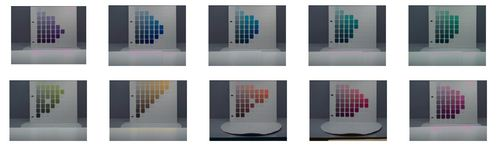 |
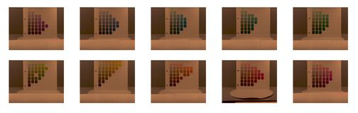 |
| 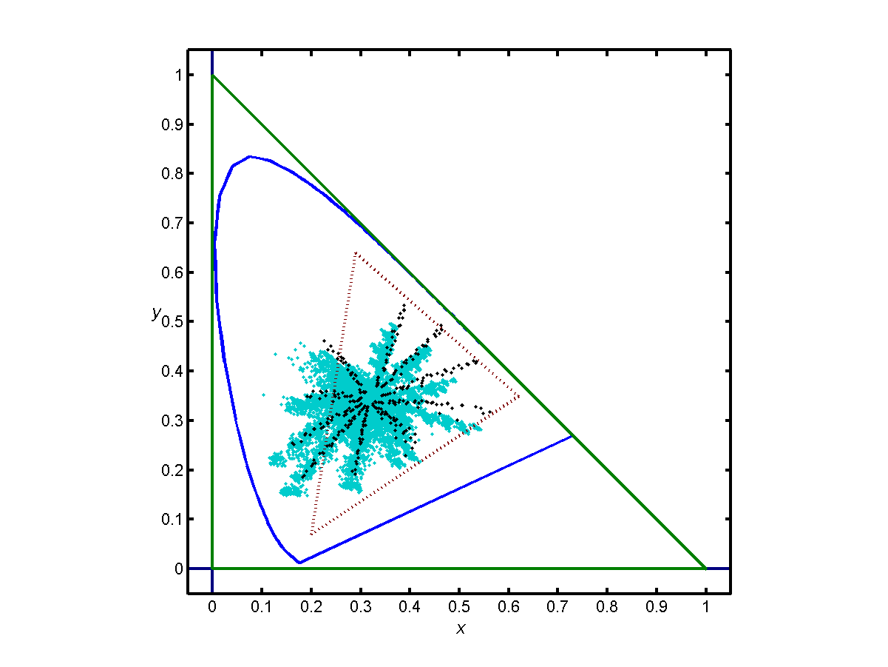 |
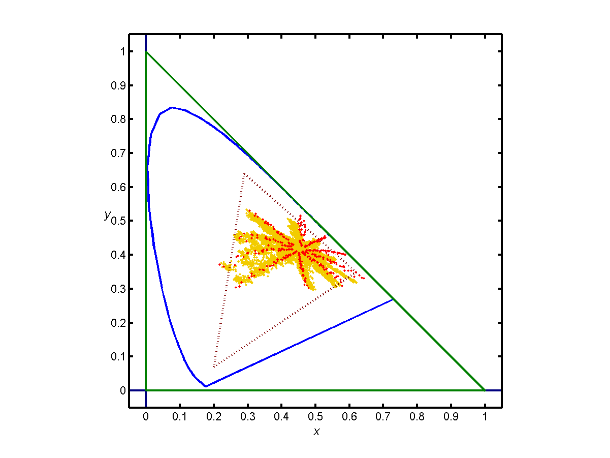 |
| Blue:
experimental Munsell
colors under CIE D65 illuminant (above pictures). Black: theoretical Munsell colors under CIE D65 illuminant. |
Yellow:
experimental
Munsell
colors
under
CIE
A
illuminant
(above
pictures). Red: theoretical Munsell colors under CIE A illuminant. |
| Natural Objects I | |
| 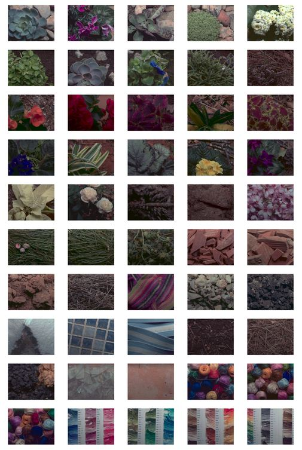 |
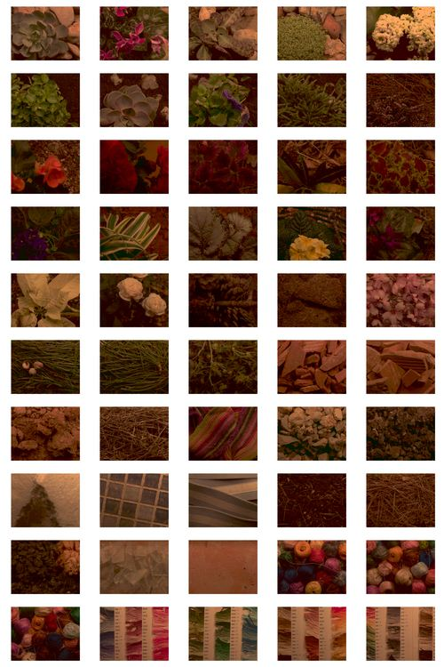 |
| 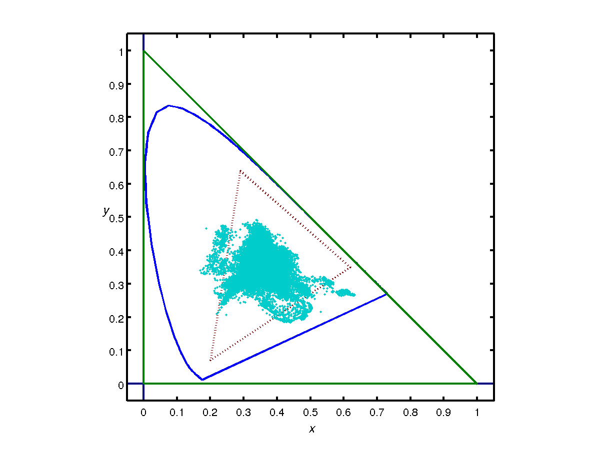 | 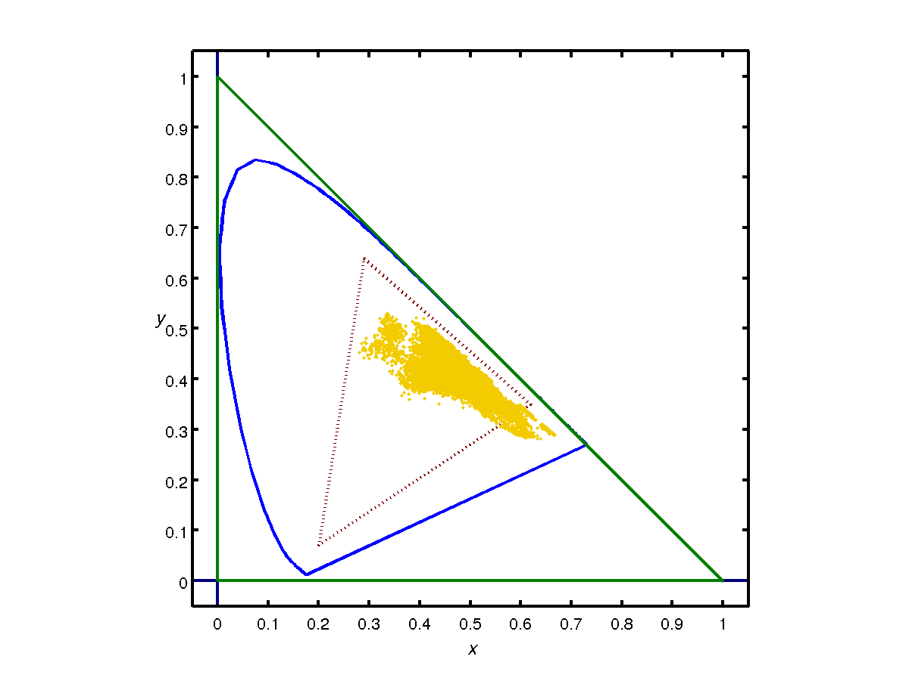 |
| "Natural" Objects II | |
| 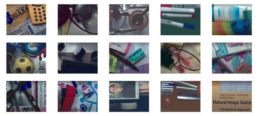 |
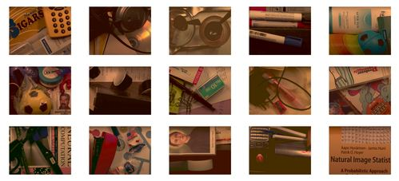 |
 |
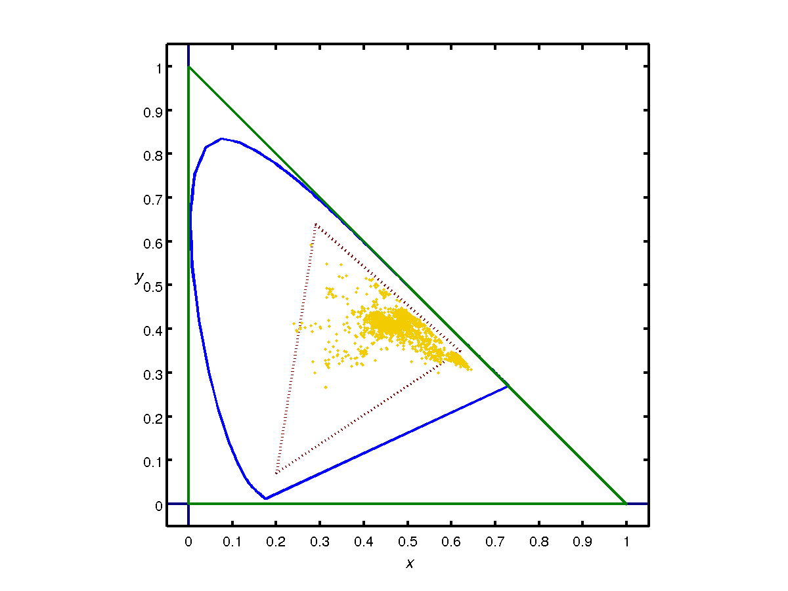 |
{kind=link}
{kind=link}
{kind=link}
{kind=link}
{kind=link}
{kind=link}
Related
Papers
(database
citation)
|
|
| Colorlab (The Matlab
Color Science
Toolbox) If you found this database interesting, you may be probably interested in accurate colorimetric computation in Matlab. Please check this link for more information on COLORLAB: The Matlab Color Science Toolbox!. |